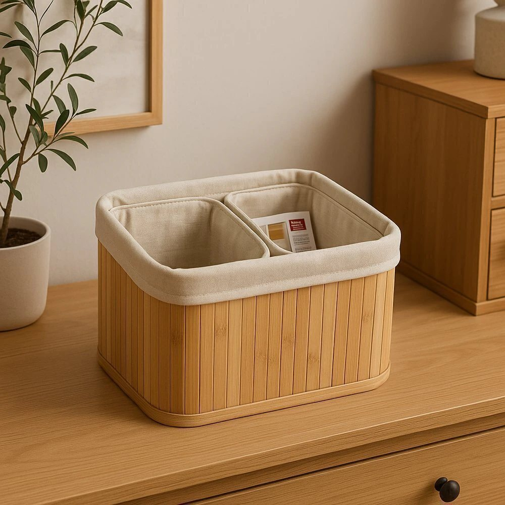

Bambu trançado por fora, forro de tecido por dentro. Três cestos que organizam o armário e podem ficar à vista — o que guarda não precisa ser escondido.
Forro de tecido: protege roupa e toalha do trançado
Bambu natural, leve de carregar cheio
Um grande e dois pequenos, para separar o que não se mistura
| Marca | Top Rio |
|---|---|
| Material | Bambu trançado com forro de tecido |
| Medidas | grande 14 × 23 × 33 cm · pequenos 12 × 15 × 21 cm |
| Conteúdo | 1 cesto grande e 2 pequenos |
O prazo aparece no carrinho antes de você fechar a compra, calculado pelo seu CEP. A gente prefere mostrar o prazo real a prometer o que não cumpre.
Você tem 7 dias depois de receber para pedir a troca ou a devolução, sem precisar explicar o motivo. É o seu direito, e para a gente é o mínimo.
A gente resolve. Manda uma foto pelo WhatsApp assim que abrir a caixa e a reposição é nossa.
Pix, boleto ou cartão. As condições de parcelamento aparecem na loja, na hora de fechar.
O valor é calculado na hora pelo seu CEP e aparece no carrinho, com o prazo, antes de você confirmar. Sem surpresa no fim.
Frete calculado
pelo seu CEP
Pix, boleto
ou cartão
Devolução
em até 7 dias
Atendimento
humanizado
As 8 cenas são um passeio de inspiração pela casa — as peças que aparecem nelas não estão à venda. O que a Casa da Filó vende são as 141 peças da vitrine, com preço e medidas conferidos. A compra acontece na loja, onde ficam frete, Pix, cartão e nota fiscal.
Usamos cookies só para entender como a casa é visitada e melhorar o que você vê. Nada de anúncios. Política de privacidade.